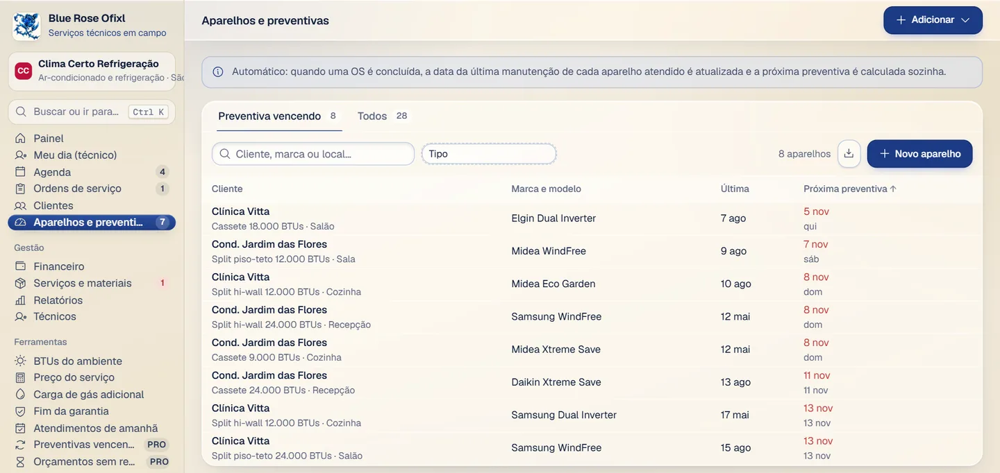

Blue Rose Ofixl · em desenvolvimento, vai entrar no Veltria Financeiro
Do chamado ao PIX, a ordem de serviço inteira no celular do técnico.
Para empresas de ar-condicionado, refrigeração, elétrica e hidráulica. Agenda e rota do dia, aviso de técnico a caminho, orçamento que o cliente aprova pelo link, checklist com fotos e cobrança com PIX. E o sistema lembra sozinho da manutenção preventiva de cada aparelho.
O Ofixl não vai ser lançado como app separado. As ordens de serviço, o modo do técnico e a aprovação pelo link vão entrar no Veltria Financeiro como módulo, sem assinatura à parte.
Como uma ordem de serviço anda
- 1
O pedido vira OS
O chamado vira uma OS na agenda, com o endereço, o histórico do cliente e os aparelhos dele.
- 2
Estou a caminho
O técnico vê o dia com um botão por vez, a rota no mapa e o telefone do cliente a um toque. Quando ele sai, o cliente recebe o aviso no WhatsApp e acompanha a visita pelo link.
- 3
Cheguei, orçamento aprovado
O cliente aprova item por item no celular e a OS já vira agendamento. Orçamento parado há 3 dias aparece com lembrete pronto.
- 4
Concluir e cobrar
Checklist e fotos ficam na OS. O comprovante vai com PIX copia e cola e QR code; quando o cliente avisa que pagou, você confere e dá baixa.
- 5
A próxima visita já tem data
Ao concluir, a próxima manutenção de cada aparelho é calculada e o sistema avisa quando oferecer.
O que ele resolve
- Pedido perdido no WhatsApp e técnico sem o endereço e o histórico do cliente.
- Cada chamado vira uma OS com cliente, endereço e aparelhos, e cai no dia do técnico certo.
- Orçamento que o cliente não responde e preventiva que ninguém lembra de oferecer.
- Aprovação pelo link, lembrete do orçamento parado e lista de preventivas vencendo.
- Serviço feito e esquecido de cobrar.
- A OS concluída vai para Serviços a receber, com PIX no comprovante.
Preventiva automática
Cada aparelho tem a sua periodicidade. Quando uma OS é concluída, a data da última manutenção é atualizada e a próxima preventiva é calculada sozinha. A lista mostra o que vence primeiro, por cliente, marca e local.

Tudo o que vem nas ordens de serviço
 Tutorial em vídeo
Tutorial em vídeo
O vídeo mostra o app como ele foi feito. No Financeiro, as mesmas funções vão aparecer dentro do sistema.
- Modo do técnico
- O dia de cada técnico, um botão por vez: estou a caminho, cheguei, concluir. Rota no mapa e telefone do cliente a um toque.
- Cliente acompanha pelo link
- Aviso no WhatsApp quando o técnico sai; o cliente vê a visita, as fotos, o checklist e a garantia.
- Orçamento pelo link
- Aprovação item por item no celular. Orçamento parado há 3 dias aparece com lembrete pronto.
- Aparelhos por cliente
- Marca, modelo, BTUs e local de cada aparelho, com a periodicidade da preventiva.
- Serviços e materiais
- Catálogo com estoque que baixa sozinho.
- Cobrança com PIX
- Comprovante com PIX copia e cola e QR code.
- Relatórios
- Por técnico e por tipo de serviço, e avaliação do cliente com estrelas.
- Painel do dono
- Cargos para a equipe e modelos prontos para ar-condicionado, elétrica e hidráulica.
- Calculadoras
- BTUs do ambiente, preço do serviço, carga de gás adicional e fim da garantia.
- Assistente com IA grátis
- Pergunte o que priorizar no dia, como está o mês ou peça uma mensagem de cobrança.
Para usar hoje: o Veltria Financeiro
O Financeiro já tem ordem de serviço com orçamento, aprovação, laudo, impressão e faturamento direto para o contas a receber, além de cobrança, PIX e contas a pagar. O técnico em campo pelo celular já vem incluso.
O que é do Ofixl (modo do técnico completo, aprovação do cliente pelo link e preventivas) entra no Financeiro como módulo, sem assinatura à parte.

Perguntas frequentes
Vou poder baixar o Ofixl no Google Play?
Não. O Ofixl não vai ser lançado como app separado: as ordens de serviço dele vão entrar no Veltria Financeiro, que abre no navegador do computador e do celular.
Serve para elétrica e hidráulica?
Sim. Na criação da empresa você escolhe o modelo do seu ramo (ar-condicionado e refrigeração, elétrica ou hidráulica) e o catálogo de serviços já vem montado.
A IA é paga à parte?
Não. O assistente com IA vem incluso, com 20 perguntas por dia por empresa. Ele usa os números e avisos do resumo do sistema, nunca telefones ou e-mails dos seus clientes.
Tem fidelidade?
Não. O Veltria Financeiro é por assinatura e você cancela quando quiser em Minha conta, aqui no site.